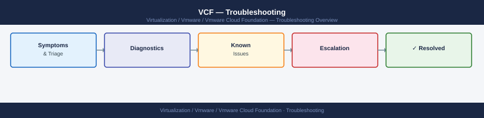

VCF Troubleshooting — Escalation¶

Before you begin¶
- Access required: SSH access to SDDC Manager (
vcf-adminuser); vSphere Client read access; Broadcom support account with entitlement to VCF - Do this first: collect all data below before touching anything — Broadcom will ask for it in the first response, and having it ready cuts resolution time significantly
- Do not retry: if SDDC Manager shows a stuck or failed task, do not click Retry. Retrying a failed lifecycle task can leave component versions in a mixed state that is harder to recover from
- Document as you go: paste every command and its output into a running notes document — this becomes your timeline for the SR
Pre-Escalation Self-Check¶
Run this before opening an SR. Many VCF issues are resolvable without Broadcom.
| Check | What to do | Expected result |
|---|---|---|
| SDDC Manager UI accessible | Browse to https://<sddc-mgr-fqdn> |
Login page loads |
| SDDC Manager services running | SSH → systemctl status operationsmanager |
active (running) |
| vCenter reachable from SDDC Mgr | SSH → curl -sk https://<vcenter-fqdn>/ui/ |
Returns HTML |
| NSX Manager reachable | SSH → curl -sk https://<nsx-mgr-fqdn>/api/v1/node/version |
Returns JSON with version |
| vSAN health | vSphere Client → Monitor → vSAN → Health | All green |
| NTP in sync | SSH → timedatectl status |
System clock synchronized: yes |
| Failed tasks | SDDC Manager UI → Tasks | Note any tasks with status FAILED and copy their Task ID |
| SOS health summary | See collection steps below | No ERROR lines in output |
Step-by-Step Data Collection¶
Run all of these before opening the SR. SSH to SDDC Manager as vcf-admin.
1. Get the VCF version¶
# SSH to SDDC Manager
ssh vcf-admin@<sddc-mgr-fqdn>
# Check VCF version — note the full build number, not just the release
cat /etc/vmware/vcf/domainManagerApp/vcf-version.properties
# Example output: BUILD_NUMBER=23480823 VCF_VERSION=5.2.0.0
vcf-admin@sddc-mgr-fqdn's password:
Welcome to VMware Cloud Foundation SDDC Manager
Last login: Wed Jan 15 14:32:18 2025 from 10.42.100.55
vcf-admin@sddc-mgr [ ~ ]$ cat /etc/vmware/vcf/domainManagerApp/vcf-version.properties
BUILD_NUMBER=23480823
VCF_VERSION=5.2.0.0
BUILD_DATE=2024-12-10T08:45:22Z
PRODUCT_NAME=VMware Cloud Foundation
RELEASE_NOTES_URL=https://docs.vmware.com/en/VMware-Cloud-Foundation/5.2/rn/vmware-cloud-foundation-520-release-notes.html
Common errors
Permission denied (publickey,password). — Verify the SSH key is loaded or use password authentication; confirm vcf-admin account exists on the SDDC Manager appliance.
cat: /etc/vmware/vcf/domainManagerApp/vcf-version.properties: No such file or directory — SSH to the correct SDDC Manager node (primary, not secondary); the file path is appliance-specific and may differ if VCF is not fully initialized.
2. Run the SOS health summary (quick — takes ~2 minutes)¶
# Run from SDDC Manager shell as vcf-admin
python3 /opt/vmware/sddc-support/sos --health-summary
# Save the output to a file — you will attach this to the SR
python3 /opt/vmware/sddc-support/sos --health-summary 2>&1 | tee /tmp/sos-health-$(date +%F).txt
VCF Health Summary Report
Generated: 2024-01-15 14:32:18 UTC
SDDC Manager Version: 5.4.1.0 (Build 21567890)
=== CLUSTER HEALTH ===
Cluster: mgmt-cluster-01
Status: HEALTHY
vSAN Health: HEALTHY
Network Health: HEALTHY
vCenter: vcenter-01.sddc.local (192.168.1.50)
Cluster: workload-cluster-01
Status: HEALTHY
vSAN Health: HEALTHY
Network Health: HEALTHY
=== SDDC MANAGER SERVICES ===
Service: sddc-manager-api
Status: RUNNING
Uptime: 45 days 12:34:56
Service: sddc-manager-ui
Status: RUNNING
Uptime: 45 days 12:34:56
=== LICENSING ===
vSphere Enterprise Plus: VALID (Expires: 2025-06-30)
vSAN Advanced: VALID (Expires: 2025-06-30)
Report saved to: /tmp/sos-health-2024-01-15.txt
Common errors
Permission denied: /opt/vmware/sddc-support/sos — Verify you are logged in as vcf-admin and have execute permissions on the SOS script with ls -la /opt/vmware/sddc-support/sos.
ModuleNotFoundError: No module named 'vmware' — Ensure the Python environment is correctly initialized by running source /opt/vmware/sddc-support/bin/activate before executing the script.
/tmp: Read-only file system — Use an alternative writable directory such as /var/tmp or /home/vcf-admin/logs for the tee output redirection.
Look for any line containing ERROR or FAILED. These are the items to include in your SR description.
3. Run the full SOS bundle (takes 15–30 minutes)¶
# Full bundle — required for any lifecycle or complex issue
python3 /opt/vmware/sddc-support/sos \
--with-host-logs \
--skip-known-host-check \
2>&1 | tee /tmp/sos-full-$(date +%F).txt
# The bundle is saved to /var/log/vmware/vcf/sddc-support/sos-YYYYMMDD-HHMMSS/
# Compress it for upload
cd /var/log/vmware/vcf/sddc-support/
tar czf /tmp/sos-bundle-$(date +%F).tar.gz sos-*/
Gathering system information...
Collecting vSphere logs from all hosts...
Host esx-01.lab.local: Connected (build 21493240)
Host esx-02.lab.local: Connected (build 21493240)
Host esx-03.lab.local: Connected (build 21493240)
Collecting NSX Manager logs...
Collecting vCenter Server logs...
Collecting SDDC Manager logs...
Bundle generation in progress... [████████████████████] 100%
Support bundle created: /var/log/vmware/vcf/sddc-support/sos-20250116-143022/
Total size: 2.3 GB
Compressing bundle...
sos-bundle-2025-01-16.tar.gz created successfully (2.1 GB)
Common errors
python3: command not found — Install Python 3 with apt-get install python3 or yum install python3 depending on your OS.
Permission denied — Run the command with sudo or ensure your user has read access to /opt/vmware/sddc-support/sos and write access to /tmp and /var/log/vmware/vcf/sddc-support/.
No such file or directory: /opt/vmware/sddc-support/sos — Verify VMware Cloud Foundation support tools are installed; reinstall the SDDC support bundle if the path is missing.
4. Collect the SDDC Manager support bundle¶
# SDDC Manager support bundle — separate from SOS
vcf-support-bundle --type sddc
# Output goes to /var/log/vmware/vcf/sddc-support/
# Check for the file with today's date and copy it to /tmp/
Generating SDDC Manager support bundle...
Bundle generation started at 2024-01-15 14:32:18 UTC
Collecting system logs...
Collecting database diagnostics...
Collecting network configuration...
Collecting certificate information...
Bundle generation completed successfully
Support bundle saved to: /var/log/vmware/vcf/sddc-support/sddc-support-bundle-2024-01-15-143218.tar.gz
Bundle size: 487 MB
Common errors
vcf-support-bundle: command not found — Verify the VCF management package is installed with rpm -qa | grep vcf-manager and install it if missing.
Permission denied: /var/log/vmware/vcf/sddc-support/ — Run the command with sudo or ensure your user is in the vcf group with sudo usermod -aG vcf $USER.
Insufficient disk space available (required: 2GB, available: 512MB) — Free up space on the root filesystem or mount a larger volume before generating the bundle.
5. Collect the failed task ID¶
In the SDDC Manager UI: go to Lifecycle → Tasks (or Administration → Tasks depending on VCF version). Find the failed task. Copy the Task ID (a long UUID string like d2c8a4f1-...). Paste it into your SR description.
6. Write the timeline¶
Create a plain text file with this structure:
VCF version: 5.2.0.0 build 23480823
Issue first observed: 2026-06-14 14:30 UTC
Last known good state: 2026-06-14 13:00 UTC (after patching ESXi hosts)
Changes made in the 24h before the issue:
- 13:00: ESXi patch applied to 4 hosts via LCM
- 14:10: NSX upgrade initiated
- 14:25: NSX upgrade task showed FAILED
Steps already taken:
- Checked NSX Manager UI — Manager cluster shows degraded
- Did NOT retry the upgrade task
Blast radius: NSX overlay networking degraded, VMs retain connectivity via existing routes
How to Open the SR on Broadcom Support Portal¶
- Go to support.broadcom.com and sign in with your Broadcom account (formerly VMware Customer Connect / My VMware).
-
If you do not have an account: click Register on the sign-in page and use your company email. Entitlement is linked to your company's Broadcom contract.
-
Click Open a New Case (top navigation bar).
-
Under Select Product Family, choose VMware Cloud Foundation.
-
Under Product Version, select the exact version from your
vcf-version.propertiesoutput. -
Under Request Type, select Technical for operational issues. Use Licensing only for license activation problems.
-
Under Severity, select:
- S1 — Critical: SDDC Manager is down and you cannot manage the environment; vSAN is degraded with data at risk; production VMs are inaccessible
- S2 — Major: A key lifecycle workflow is failing (upgrade, patch, expansion) but VMs are running; you have a temporary workaround
- S3 — Minor: Non-critical feature is degraded; single-component issue; cluster remains healthy
-
S4 — General: How-to question, documentation request, or non-urgent configuration help
-
In the Summary field, write one sentence: product + symptom + scope. Example:
VCF 5.2.0.0 — NSX upgrade task failed at 14:25 UTC, NSX Manager cluster degraded, overlay network impacted across one workload domain. -
In the Description field, paste:
- The VCF version and build number
- The failed task ID (if applicable)
- The timeline you wrote in Step 6 above
- The SOS health summary output (paste the ERROR lines, not the full output)
-
What you have already tried and what happened
-
Under Attachments, upload:
sos-bundle-YYYY-MM-DD.tar.gz— the full SOS bundlesos-health-YYYY-MM-DD.txt— the health summary- Any screenshots of the SDDC Manager task failure
-
The SDDC Manager support bundle (if collected)
-
Click Submit. You will receive a case number by email immediately.
-
S1 only: On the case confirmation page, a phone number is displayed for your region (NA, EMEA, APAC). Call it immediately — do not wait for an engineer to respond to the portal ticket.
Escalation Path¶
If progress stalls after initial assignment, follow these steps in order:
Step 1 — Open case at support.broadcom.com with SOS bundle attached (see above)
↓
Step 2 — T1 support acknowledges and confirms SOS received (typically 30 min–4 hr)
↓
Step 3 — If no meaningful progress in 4 hours for S1 or 1 business day for S2:
→ Reply in the case and ask for escalation to a VCF Senior Engineer (T2)
→ State: "Requesting T2 VCF SE assignment — issue impact: [describe]"
↓
Step 4 — T2 VCF SE is assigned; they will schedule a live Zoom/Webex session
→ Have SSH access to SDDC Manager and NSX Manager ready for the call
↓
Step 5 — If T2 cannot resolve and issue requires code-level investigation:
→ T2 escalates internally to T3 (engineering) — you do not need to do this manually
↓
Step 6 — For data loss risk, security incidents, or 24h+ with no resolution:
→ Request a Critical Situation (CritSit) engagement
→ In the case: "Requesting CritSit — [reason: data at risk / 24h outage / revenue impact]"
→ CritSit brings a dedicated team lead + exec visibility
What NOT to Do¶
These actions make the situation worse and will be the first thing Broadcom asks about.
| Do NOT do this | Why | What to do instead |
|---|---|---|
| Retry a stuck SDDC Manager task | Leaves components at mixed upgrade versions; harder to recover | Wait for Broadcom guidance on whether retry is safe |
Restart SDDC Manager (systemctl restart operationsmanager) |
Can corrupt in-flight workflow state | Only restart if explicitly told to by GSS |
| Reboot NSX Manager VMs | Can cause split-brain in the NSX Manager cluster | Wait for T2 guidance |
| Delete and re-create a failed workflow | Loses audit trail; may not fix root cause | Document the failed task ID and escalate |
| Apply additional patches or upgrades | Adds variables to an already-broken environment | Freeze all changes until resolution |
| Run SOS while upgrade is in progress | Interferes with active lifecycle operations | Wait for task to complete or fail before running SOS |
Useful Commands for Case Updates¶
Paste these outputs into case updates to show Broadcom the current state.
# SDDC Manager service status — paste into every case update
systemctl status operationsmanager lcm domainmanager sddc-manager-svc 2>&1
# Recent SDDC Manager logs (last 200 lines)
journalctl -u operationsmanager -n 200 --no-pager 2>&1
# VCF task status via API (get bearer token first)
TOKEN=$(curl -sk -X POST https://sddc-mgr.local/v1/tokens \
-H 'Content-Type: application/json' \
-d '{"username":"administrator@vsphere.local","password":"<pass>"}' \
| python3 -c "import sys,json; print(json.load(sys.stdin)['accessToken'])")
# List failed tasks
curl -sk -X GET "https://sddc-mgr.local/v1/tasks?status=FAILED" \
-H "Authorization: Bearer $TOKEN" | python3 -m json.tool
# vSAN health summary (run from vCenter shell or PowerCLI)
# In vSphere Client: Monitor → vSAN → Health — screenshot and attach
# NSX Manager cluster status
curl -sk -u admin:<password> https://nsx-mgr.local/api/v1/cluster/status \
| python3 -m json.tool
Expected output● operationsmanager.service - VMware SDDC Manager Operations Manager
Loaded: loaded (/etc/systemd/system/operationsmanager.service; enabled; vendor preset: disabled)
Active: active (running) since Wed 2024-01-17 14:32:18 UTC; 2 days ago
Main PID: 4521 (java)
Tasks: 47 (limit: 4915)
Memory: 2.3G
CPU: 18min 42.123s
CGroup: /system.slice/operationsmanager.service
└─4521 /usr/lib/jvm/java-11-openjdk-11.0.18.0.10-1.el7_9.x86_64/bin/java
● lcm.service - VMware Lifecycle Manager
Loaded: loaded (/etc/systemd/system/lcm.service; enabled; vendor preset: disabled)
Active: active (running) since Wed 2024-01-17 14:33:05 UTC; 2 days ago
Main PID: 5847 (java)
Memory: 1.8G
● domainmanager.service - VMware Domain Manager
Loaded: loaded (/etc/systemd/system/domainmanager.service; enabled; vendor preset: disabled)
Active: active (running) since Wed 2024-01-17 14:33:42 UTC; 2 days ago
Main PID: 6123 (java)
Memory: 1.5G
● sddc-manager-svc.service - SDDC Manager Service
Loaded: loaded (/etc/systemd/system/sddc-manager-svc.service; enabled; vendor preset: disabled)
Active: active (running) since Wed 2024-01-17 14:34:10 UTC; 2 days ago
Main PID: 6891 (java)
Memory: 3.1G
2024-01-19T09:47:32.156Z INFO [OperationsManager] Task 8f4c2a91-7d3e-4b5f-a2c1-9e8d7f6c5b4a completed successfully
2024-01-19T09:46:18.423Z WARN [OperationsManager] Retrying connection to vCenter vcenter.sddc.local (attempt 2/5)
2024-01-19T09:45:02.891Z INFO [OperationsManager] Cluster validation passed for domain-1
2024-01-19T09:44:15.567Z DEBUG [OperationsManager] NSX Manager heartbeat received from 192.168.1.45
2024-01-19T09:43:44.234Z INFO [OperationsManager] Backup job scheduled for 2024-01-20 02:00:00 UTC
{
"accessToken": "eyJhbGciOiJIUzI1NiIsInR5cCI6IkpXVCJ9.eyJzdWIiOiJhZG1pbmlzdHJhdG9yQHZzcGhlcmUubG9jYWwiLCJleHAiOjE3MDU2NzY
¶
● operationsmanager.service - VMware SDDC Manager Operations Manager
Loaded: loaded (/etc/systemd/system/operationsmanager.service; enabled; vendor preset: disabled)
Active: active (running) since Wed 2024-01-17 14:32:18 UTC; 2 days ago
Main PID: 4521 (java)
Tasks: 47 (limit: 4915)
Memory: 2.3G
CPU: 18min 42.123s
CGroup: /system.slice/operationsmanager.service
└─4521 /usr/lib/jvm/java-11-openjdk-11.0.18.0.10-1.el7_9.x86_64/bin/java
● lcm.service - VMware Lifecycle Manager
Loaded: loaded (/etc/systemd/system/lcm.service; enabled; vendor preset: disabled)
Active: active (running) since Wed 2024-01-17 14:33:05 UTC; 2 days ago
Main PID: 5847 (java)
Memory: 1.8G
● domainmanager.service - VMware Domain Manager
Loaded: loaded (/etc/systemd/system/domainmanager.service; enabled; vendor preset: disabled)
Active: active (running) since Wed 2024-01-17 14:33:42 UTC; 2 days ago
Main PID: 6123 (java)
Memory: 1.5G
● sddc-manager-svc.service - SDDC Manager Service
Loaded: loaded (/etc/systemd/system/sddc-manager-svc.service; enabled; vendor preset: disabled)
Active: active (running) since Wed 2024-01-17 14:34:10 UTC; 2 days ago
Main PID: 6891 (java)
Memory: 3.1G
2024-01-19T09:47:32.156Z INFO [OperationsManager] Task 8f4c2a91-7d3e-4b5f-a2c1-9e8d7f6c5b4a completed successfully
2024-01-19T09:46:18.423Z WARN [OperationsManager] Retrying connection to vCenter vcenter.sddc.local (attempt 2/5)
2024-01-19T09:45:02.891Z INFO [OperationsManager] Cluster validation passed for domain-1
2024-01-19T09:44:15.567Z DEBUG [OperationsManager] NSX Manager heartbeat received from 192.168.1.45
2024-01-19T09:43:44.234Z INFO [OperationsManager] Backup job scheduled for 2024-01-20 02:00:00 UTC
{
"accessToken": "eyJhbGciOiJIUzI1NiIsInR5cCI6IkpXVCJ9.eyJzdWIiOiJhZG1pbmlzdHJhdG9yQHZzcGhlcmUubG9jYWwiLCJleHAiOjE3MDU2NzY
Support Portal and SLA Reference¶
| Severity | Definition | Initial Response SLA |
|---|---|---|
| S1 — Critical | Production down; SDDC Manager inaccessible; vSAN data at risk; no workaround | 30 minutes (24×7) |
| S2 — Major | Key workflow failing; major feature unavailable; workaround exists | 4 hours (business hours + on-call) |
| S3 — Minor | Non-critical feature degraded; single component impacted; cluster healthy | 1 business day |
| S4 — General | How-to questions, feature requests, documentation | 2 business days |
Your entitlement level (Production, Premier, Mission Critical) may override these SLAs. Check your contract.
See also¶
Verify resolution¶
- Confirm the failed task is no longer showing in SDDC Manager Tasks view
- Run
python3 /opt/vmware/sddc-support/sos --health-summaryand confirm noERRORlines - Verify the specific component (NSX, vCenter, ESXi) that was degraded shows healthy in the SDDC Manager dashboard
- Perform the operation that was failing (run a small lifecycle update, vMotion a test VM) and confirm it succeeds
- Monitor for 15 minutes — leave the SDDC Manager Tasks view open and confirm no new failures appear